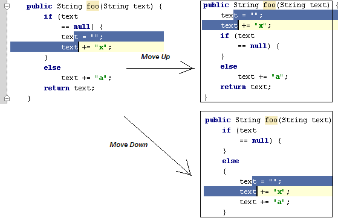

Code/Move Statement Up/Down action is useful for reorganizing code lines in your file,
e.g., to bring variable declaration statement closer to variable usage.
For example, try to select these two lines and press &shortcut:MoveStatementUp; and &shortcut:MoveStatementDown;:
